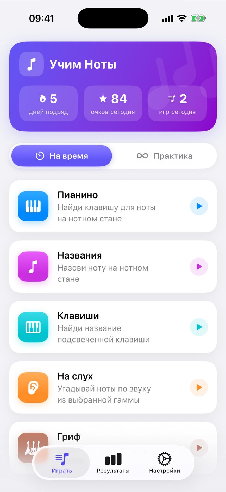
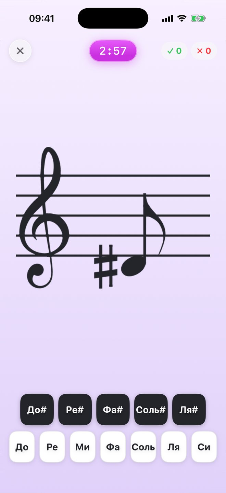
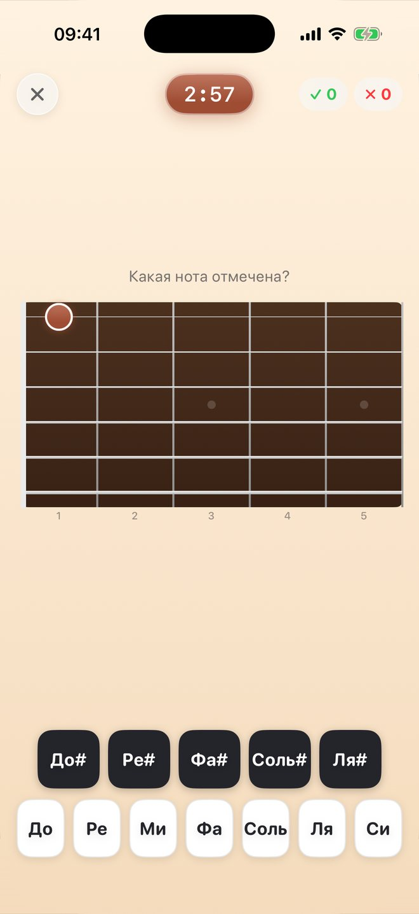
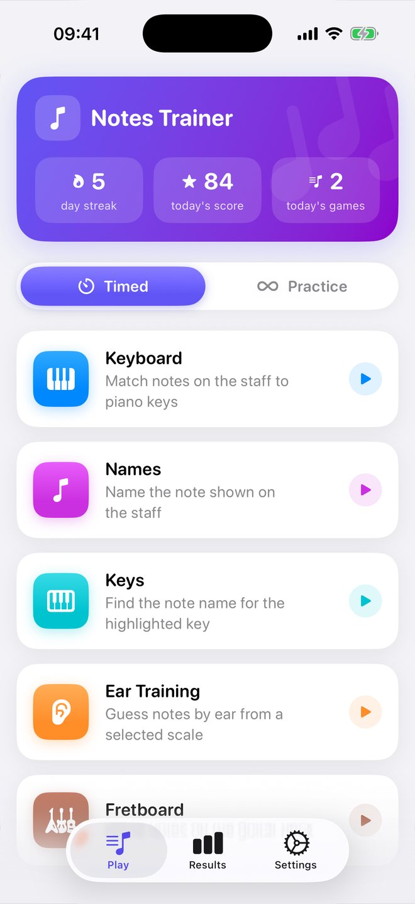
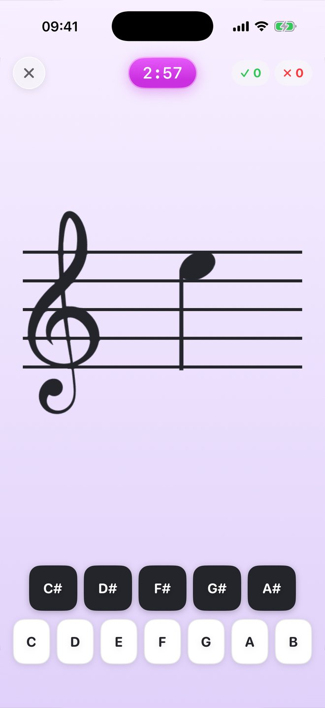
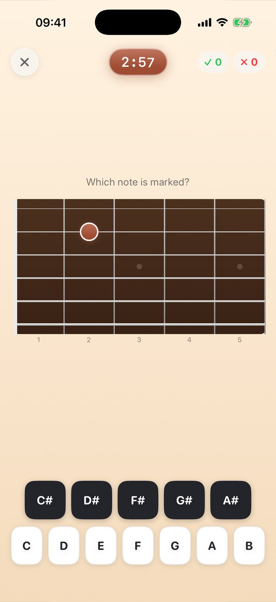

Учить Ноты
Нотный стан, пианино, слух и гитара.
- iPhone
- iPad
- пять игр
- без рекламы
- без аккаунта
Учите ноты короткими партиями. Пять игр тренируют нотный стан, пианино, слух и гитару, а ноты, в которых вы ошибаетесь, возвращаются, пока не начнут получаться.



Выбор игры, «Названия» и «Гриф».
Игры
- Пианино. На стане появляется нота. Возьмите её на клавиатуре.
- Названия. Назовите ноту на стане — в скрипичном или басовом ключе.
- Клавиши. Загорается клавиша. Выберите её название.
- На слух. Слышите ноту, интервал или короткую фразу из гаммы и отвечаете кнопками или поёте.
- Гриф. На грифе гитары отмечен лад. Назовите ноту в выбранном диапазоне, от открытых струн и выше. Или возьмите гитару: на экране название ноты или нота на стане, вы её играете, а приложение слышит, верно ли.
Ответы без кнопок
Ответы голосом включаются в Настройках: называйте ноту вслух в «Названиях», «Клавишах», «Грифе» и «На слух» с одной нотой. Пение и гитара включаются перед игрой, на экране «На слух» и «Грифа». Микрофон нужен только для этих ответов, звук не записывается. Подробнее — в политике.
Два режима
На время — идёт отсчёт, а сохранённые результаты попадают в Game Center. Практика — без таймера, в своём темпе.
Ноты, которые не получаются
Точность считается по каждой ноте, и слабые ноты спрашиваются чаще. В статистике по нотам видно, какие из них стоит повторить. Результаты и статистика синхронизируются между вашими устройствами через iCloud.
Покупки
«Пианино», «Названия» и «Клавиши» со скрипичным ключом работают сразу. Басовый ключ, «На слух» и «Гриф» — отдельные встроенные покупки. Они восстанавливаются в Настройках.
Learn Notes
Staff, piano, ear and guitar.
- iPhone
- iPad
- five games
- no ads
- no account
Learn to read music in short sessions. Five games train the staff, the piano, your ear and the guitar, and the notes you miss come back until they stick.



Choosing a game, Names and Fretboard.
The games
- Keyboard. A note appears on the staff. Play it on the piano.
- Names. Name the note you see, in treble or bass clef.
- Keys. A piano key lights up. Choose its name.
- Ear Training. Hear a note, an interval or a short phrase from a scale and answer with the buttons, or sing it.
- Fretboard. A fret lights up on the guitar. Name the note in the range you choose, from the open strings up the neck. Or pick up your guitar: see a note by name or on the staff, play it, and the app hears whether it is right.
Answers without buttons
Turn on voice answers in Settings and say the note name in Names, Keys, Fretboard and Ear Training with single notes. Singing and guitar are switched on before a game, on the Ear Training and Fretboard screens. The microphone is used only for these answers, and audio is not recorded. More in the policy.
Two ways to practice
In Timed, the clock runs and the results you save go to Game Center. Practice has no timer, so you can learn at your own pace.
The notes you miss
Accuracy is kept for every note, and weaker notes show up more often. Note statistics show which ones to work on. Results and statistics sync between your devices through iCloud.
Purchases
Keyboard, Names and Keys work right away with the treble clef. The bass clef, Ear Training and Fretboard are separate in-app purchases. Restore them from Settings.